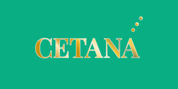
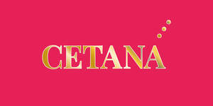
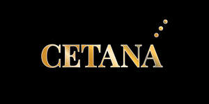

Trade Mark Journal No.2025/016 18 April 2025
UK00004183201 2 April 2025 (4,5,11,14,25,30,32)
Mark 1
Mark 2

Mark 3

Mark 4

- Class 4
- Candles; Votive candles; Scented candles; Candles for lighting; Fragranced candles; Candles and wicks for lighting; Candles in tins; Perfumed candles; Candles (Perfumed -); Table candles; Floating candles; Aromatherapy fragrance candles; Musk scented candles; Tealights.
- Class 5
- Pharmaceuticals and natural remedies; Homeopathic supplements; Herbal supplements; Liquid herbal supplements; Vitamin drinks; Vitamin and mineral food supplements; Dietary supplement drinks; Vitamin and mineral supplements; Liquid vitamin supplements; Dietary supplemental drinks.
- Class 11
- Flameless candles; Candle lamps; Scented electric candles; Electric candles.
- Class 14
- Cubic zirconia; Silver objets d'art; Jewellery; Necklaces [jewellery]; Pendants [jewellery]; Bracelets [jewellery]; Ornaments [jewellery]; Amulets being jewellery; Amulets [jewellery]; Pearls [jewellery]; Trinkets [jewellery]; Necklaces [jewellery, jewelry (Am.)]; Fashion jewellery; Lockets [jewellery]; Gold jewellery; Jade [jewellery]; Charms [jewellery]; Charms for jewellery; Jewellery charms; Ornaments [jewellery, jewelry (Am.)]; Items of jewellery; Jewellery items; Pearls [jewellery, jewelry (Am.)]; Costume jewellery; Trinkets [jewellery, jewelry (Am.)]; Rings being jewellery; Rings [jewellery]; Amulets [jewellery, jewelry (Am.)]; Bracelets [jewellery, jewelry (Am.)]; Pewter jewellery; Jewellery stones; Wristlets [jewellery]; Charms [jewellery, jewelry (Am.)]; Lockets [jewellery, jewelry (Am.)]; Rings [jewellery, jewelry (Am.)]; Chains [jewellery, jewelry (Am.)]; Jewellery products; Shoe jewellery; Crucifixes as jewellery; Precious jewellery; Agate as jewellery; Chains [jewellery]; Jewellery chains; Medallions [jewellery, jewelry (Am.)]; Jewellery in semi-precious metals; Jewellery chain; Amber pendants being jewellery; Jewellery for personal adornment; Cabochons for making jewellery; Jewellery chain of precious metal for necklaces; Amberoid pendants being jewellery; Body jewellery; Beads for making jewellery; Gold thread [jewellery, jewelry (Am.)]; Silver thread [jewellery, jewelry (Am.)]; Personal jewellery; Jewellery incorporating diamonds; Jewellery in non-precious metals; Hat jewellery; Sterling silver jewellery; Jewellery in the form of beads; Jewellery incorporating pearls; Jewellery articles; Articles of jewellery; Jewellery made from gold; Jewellery made from silver; Jewellery chain of precious metal for anklets; Wire of precious metal [jewellery, jewelry (Am.)]; Jewellery containing gold; Dress ornaments in the nature of jewellery; Jewellery chain of precious metal for bracelets; Jewellery in precious metals; Jewellery of precious metals; Threads of precious metal [jewellery, jewelry (Am.)]; Jewellery for personal wear; Jewellery fashioned from non-precious metals; Jewellery cases; Body costume jewellery; Jewellery rope chain for necklaces; Jewellery fashioned of semi-precious stones.
- Class 25
- Footwear; Sneakers [footwear]; Footwear [excluding orthopedic footwear]; Flip-flops for use as footwear; Wooden shoes [footwear]; Trainers [footwear]; Footwear for women; Casual footwear; Footwear for men; Pumps [footwear]; Leisure footwear; Rubbers [footwear]; Heelpieces for footwear; Beach footwear; Parts of clothing, footwear and headgear; Shoes; Children's footwear; Welts for footwear; Footwear (Welts for -); Shoes for leisurewear; Infants' footwear; Footwear not for sports; Ladies' footwear; Slip-on shoes; Sneakers; High-heeled shoes; Leather shoes; Esparto shoes or sandals; Waterproof shoes; Leisure shoes; Footwear for men and women; Esparto shoes or sandles; Rubber shoes; Sandals and beach shoes; Footwear made of vinyl; Footwear made of wood; Shoes for casual wear; Clothing; Headgear; Headgear for wear; Headbands [clothing]; Headbands for clothing; Visors [clothing]; Gloves [clothing]; Gloves as clothing; Veils [clothing]; Jackets [clothing]; Capes (clothing); Muffs [clothing]; Hoods [clothing]; Woolen clothing; Jerseys [clothing]; Braces for clothing; Collars [clothing]; Belts for clothing; Belts [clothing]; Bandeaux [clothing]; Cowls [clothing]; Chaps (clothing); Embroidered clothing; Wristbands [clothing]; Clothing for leisure wear; Corsets [clothing, foundation garments]; Knitwear [clothing]; Gabardines [clothing]; Gloves for apparel; Mitts [clothing]; Jackets (Stuff -) [clothing]; Stuff jackets [clothing]; Knitted clothing; Leather clothing; Clothing of leather; Leather (Clothing of -); Ready-to-wear clothing; Fabric belts [clothing]; Shorts [clothing]; Braces for clothing [suspenders]; Silk clothing; Infant clothing; Mufflers [clothing]; Linen clothing; Maternity clothing; Leather belts [clothing]; Combinations [clothing]; Ready-made clothing; Cashmere clothing; Fingerless gloves as clothing; Ties [clothing]; Headwear; Braces [suspenders] for clothing / Suspenders [braces] for clothing; Clothes; Outer clothing.
- Class 30
- Tea-based beverages; Beverages (Tea-based -); Coffee-based beverages; Beverages (Coffee-based -); Coffee beverages; Tea beverages; Chocolate-based beverages; Beverages (Chocolate-based -); Cocoa-based beverages; Beverages (Cocoa-based -); Chocolate beverages; Cocoa beverages; Flavourings of tea for food or beverages; Prepared coffee beverages; Tea-based beverages with fruit flavoring; Tea beverages (Non-medicated -); Chocolate-based beverages with milk; Coffee beverages with milk; Tea beverages with milk; Prepared coffee and coffee-based beverages; Carbonated and non-carbonated tea based beverages; Beverages made from coffee; Beverages made of coffee; Chewing gum; Breath-freshening chewing gum; Sugarless chewing gum; Sugarfree chewing gum; Sugar-free chewing gum; Chewing gums; Chewing gum for breath freshening; Chewing candy; Sweets (candy), candy bars and chewing gum; Chewing gum, not for medical purposes; Chewing sweets (Non-medicated -); Chewing sweets (Non-medicated -) having liquid fruit fillings; Fruit gums [other than for medical use]; Sugarless candies; Sugarless sweets; Sugar-free mint candies; Non-medicated mouth freshening lozenges; Non-medicated confectionery having toffee fillings; Confectionery having liquid fruit fillings; Peppermint pastilles [confectionery], other than for medicinal use; Peppermint candy; Gelatin-based chewy candies; Candy mints; Peppermint for confectionery; Candies; Candies [sweets]; Sweets [candy]; Starch-based candies; Ice candies; Mints [candies, non-medicated]; Candy; Candies (Non-medicated -); Candies (Non-medicated -) with mint; Candy coated confections; Sweets; Peppermint sweets; Sweets (Peppermint -); Sweetmeats [candy] being flavoured with fruit; Non-medicated confectionery candy; Candy with cocoa; Sweetmeats [candy] containing fruit; Candies (Non-medicated -) with honey; Chocolate confections; Fruit jelly candy; Sugar-free sweets; Fruit jellies [confectionery]; Jellies (Fruit -) [confectionery]; Ice candy; Sugarfree sweets; Gum sweets (Non-medicated -); Non-medicated candy; Candy (Non-medicated -); Peppermint sweets [other than for medicinal use]; Confectionery; Fruit confectionery; Confectionery containing jelly; Ice lollies; Ice lollies being milk flavoured; Ice lollies containing milk; Iced lollies; Ice confectionery; Ice milk [ice cream]; Ice cream confectionery; Ice, ice creams, frozen yogurts and sorbets; Ice cream drinks; Ice cream; Cream (Ice -); Ice cream with fruit; Fruit ice cream; Fruit ice creams; Ice cream confections; Ice creams flavoured with chocolate; Ice cream desserts; Ice creams; Fruit ice; Ice confections; Frozen confectionery containing ice cream; Ice confectionery in the form of lollipops; Yoghurt based ice cream [ice cream predominating]; Ice cream bars; Ice creams containing chocolate; Ice cream stick bars; Dairy ice cream; Ice for refreshment; Fruit ice bars; Water ice; Non-dairy ice cream; Yoghurt (Frozen -) [confectionery ices]; Frozen yoghurt [confectionery ices]; Vegan ice cream; Ice milk bars; Imitation ice cream; Ice pops; Ice cream substitute; Fruit flavoured water ices in the form of lollipops; Frozen yogurt [confectionery ices]; Yogurt (Frozen -) [confectionery ices]; Ice-cream; Soya-based ice cream substitutes; Ice beverages with a cocoa base; Coffee-based beverages containing ice cream (affogato); Ice beverages with a coffee base; Sherbets [confectionery ices]; Frozen lollipops; Sorbets [water ices]; Sherbets [water ices]; Sherbet [confectionery]; Sweets (Non-medicated -); Sweetmeats [candy]; Mint-based sweets; Mint flavoured sweets (Non-medicated -); Sweetmeats; Sugar confectionery; Mint based sweets [non-medicated]; Coffee drinks; Drinks flavoured with chocolate; Cocoa drinks; Chocolate beverages with milk; Drinks prepared from chocolate; Chocolate flavoured beverages; Drinks containing chocolate; Chocolate based drinks; Aerated drinks [with coffee, cocoa or chocolate base]; Chocolate drink preparations; Chocolate drink preparations flavoured with mocha; Chocolate drink preparations flavoured with banana; Chocolate drink preparations flavoured with toffee; Chocolate coffee; Chocolate sweets; Beverages made with chocolate; Beverages made from chocolate; Aerated beverages [with coffee, cocoa or chocolate base]; Chocolate drink preparations flavoured with mint; Beverages with a chocolate base; Chocolate drink preparations flavoured with orange; Chocolate beverages containing milk; Beverages containing chocolate; Cocoa beverages with milk; Drinks prepared from cocoa; Ice beverages with a chocolate base; Chocolate candies; Chocolate confectionery; Drinks containing cocoa; Chocolate flavoured confectionery; Chocolate confectionary; Drinks based on chocolate; Prepared cocoa and cocoa-based beverages; Beverages made from cocoa; Chocolate confectionery products; Confectionery chocolate products; Coffee based drinks; Chocolate candy with fillings; Confectionery items coated with chocolate.
- Class 32
- Non-alcoholic beverages; Beverages (Non-alcoholic -); Fruit-flavored beverages; Non-alcoholic carbonated beverages; Fruit-based beverages; Fruit beverages (non-alcoholic); Fruit-flavoured beverages; Sherbets [beverages]; Kvass [non-alcoholic beverages]; Non-alcoholic beverages flavored with coffee; Non-alcoholic malt beverages; Non-alcoholic beer flavored beverages; Fruit beverages; Sorbets [beverages]; Non-alcoholic honey-based beverages; Honey-based beverages (Non-alcoholic -); Isotonic beverages; Non-alcoholic beverages flavoured with coffee; Squashes [non-alcoholic beverages]; Non-alcoholic beverages flavored with tea; Vegetable-based beverages; Smoothies [non-alcoholic fruit beverages]; Non-alcoholic beverages with tea flavor; Non-alcoholic flavored carbonated beverages; Coconut-based beverages; Sherbet beverages; Non-alcoholic drinks; Waters [beverages]; Non-alcoholic soda beverages flavoured with tea; Non-alcoholic beverages flavoured with tea; Iced fruit beverages; Frozen carbonated beverages; Root beers, non-alcoholic beverages; Fruit juice beverages (Non-alcoholic -); Non-alcoholic fruit juice beverages; Whey beverages; Beverages (Whey -); Non-alcoholic beverages containing fruit juices; Non-alcoholic fruit vinegar beverages; Alcohol free beverages; Carbonated non-alcoholic drinks; Non-alcoholic dried fruit beverages; Protein-enriched sports beverages; Frozen fruit-based beverages; Flavoured carbonated beverages; Non-alcoholic fruit drinks; Non-alcoholic beverages containing vegetable juices; Sarsaparilla [non-alcoholic beverage]; Non-alcoholic malt free beverages [other than for medical use]; Kvass [non-alcoholic beverage]; Non-alcoholic grape juice beverages; Non-alcoholic malt drinks; Non-alcoholic fruit extracts used in the preparation of beverages; Frozen fruit beverages; Isotonic non-alcoholic drinks; Vegetable juices [beverages]; Smoothies; Fruit smoothies; Vegetable smoothies; Smoothies [fruit beverages, fruit predominating]; Smoothies containing grains and oats; Fruit juice drinks; Juice drinks; Frozen fruit-based drinks; Frozen fruit drinks; Pineapple juice beverages; Fruit juice beverages; Fruit juice for use as beverages; Coconut juice; Green vegetable juice beverages; Fruit drinks; Aloe juice beverages; Non-alcoholic vegetable juice drinks; Orange juice drinks; Apple juice drinks; Mango juice; Fruit beverages and fruit juices; Fruit flavored drinks; Ginger juice beverages; Non-alcoholic sparkling fruit juice drinks; Fruit-based soft drinks flavored with tea; Fruit juice; Juice (Fruit -); Fruit flavoured drinks; Tomato juice beverages; Beverages consisting of a blend of fruit and vegetable juices; Orange juice beverages; Apple juice beverages; Fruit juices; Vegetable drinks; Organic fruit juice; Guarana drinks; Vegetable juices [beverage]; Non-alcoholic fruit cocktails; Fruit flavored soft drinks; Lemonades; Fruit flavoured carbonated drinks; Mixed fruit juice; Vegetable juice; Vitamin fortified non-alcoholic beverages; Aloe vera drinks, non-alcoholic; Non-alcoholic drinks enriched with vitamins and mineral salts; Carbohydrate drinks; Vitamin enriched sparkling water [beverages]; Drinking water with vitamins; Beverages containing vitamins; Energy drinks containing caffeine; Isotonic drinks; Energy drinks; Low-calorie soft drinks; Soft drinks flavored with tea; Fruit-flavored soft drinks; Mineral water [beverages]; Soft drinks; Soft drinks for energy supply; Non-carbonated soft drinks; Coffee-flavored soft drinks.
Kkrystal Ltd